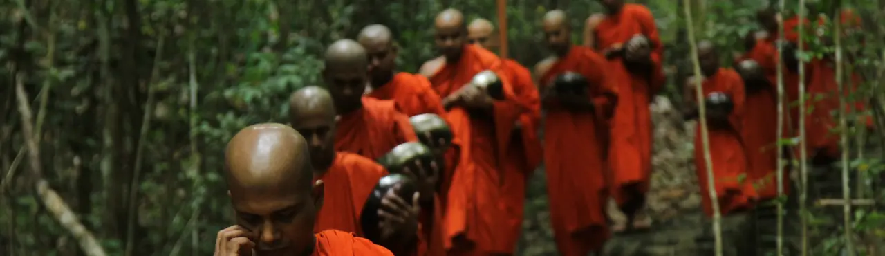

Sutty do pobrania
Polskie przekłady Słów Buddy w plikach PDF i wybrane Sutty do przeczytania od razu.
Pliki PDF
Wszystkie pliki są bezpłatne. Największy zbiór, 72 Sutty i Dhammapada, mieści się w jednym pliku i zawiera Sutty przetłumaczone na polski po raz pierwszy.
- Pobierz PDF
72 Sutty i Dhammapada
72-sutty-i-dhammapada.pdf, 2,32 MB. Zbiór w jednym pliku, niektóre Sutty po raz pierwszy po polsku.
- Pobierz PDF
58 Sutt i Dhammapada z pali na polski
58-sutt-i-dhammapada-z-pali-na-polski.pdf, 1,05 MB.
- Pobierz PDF
Dhammapada
dhammapada.pdf, 1,8 MB.
- Pobierz PDF
Dhamma na 4 arkuszach
dhamma-4-arkusze-druk-dwustronny.pdf, 449 KB. Do wydruku dwustronnego.
- Pobierz PDF
MN 135 - Małe wyjaśnienie kammy
mn-135-male-wyjasnienie-kammy.pdf, 237 KB.
Inne polskie przekłady
Część przekładów jest dostępna na innych stronach, warto tam zajrzeć: Sasana.pl, Dhamma.pl, Varapanyo-5.blogspot.com, Majjhima-nikaya.blogspot.com, Metta.lk/tipitaka. Do pobrania są też setki Sutt w PDF, w tym 482 przekłady 404 Sutt z Sasana.pl.
Przeczytaj od razu
Przekroczenie powodzi - SN 1.1
"Jak Pan przekroczył powódź?" "Nie zatrzymując się, przyjacielu, ale i nie naprężając się przekroczyłem powódź. Kiedy zatrzymywałem się, tonąłem, a kiedy walczyłem, unosiło mnie."Oghatarana Sutta, SN 1.1
Powódź to to, co nie pozwala istotom osiągać wyższych stanów i Nibbany. Są cztery powodzie: pożądanie przyjemności zmysłowych, pożądanie istnienia, powódź poglądów i powódź niewiedzy, czyli nieznajomość Czterech Szlachetnych Prawd.
Sutta o przerwaniu cyklu - SN 7.12
"Wciąż w kółko rodzi się i umiera; wciąż w kółko noszą go do grobu. Ale jeśli nagle znalazł sposób, co nie prowadzi do nowych narodzin, otrzymawszy wzrost mądrości, nie rodzi się wciąż w kółko."Udaya Sutta, SN 7.12
Dhamma i Vinaya nauczycielem - DN 16
"Dhamma i Vinaya, które wskazałem i sformułowałem dla was, to ma być waszym Nauczycielem, kiedy odejdę."Mahaparinibbana Sutta, DN 16